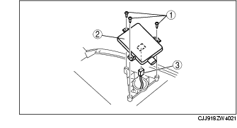

Discharge headlight control module removal/installation
- • Incorrect servicing of the discharge headlights could result in electrical shock. Before servicing the discharge headlights, always refer to the discharge headlight service warnings. (See DISCHARGE HEADLIGHT SERVICE WARNINGS.)
1. Disconnect the negative battery cable.
2. Remove the front bumper. (See FRONT BUMPER REMOVAL/INSTALLATION.)
3. Remove the front combination light. (See FRONT COMBINATION LIGHT REMOVAL/INSTALLATION.)
4. Remove in the order indicated in the table.

5. Install in the reverse order of removal.